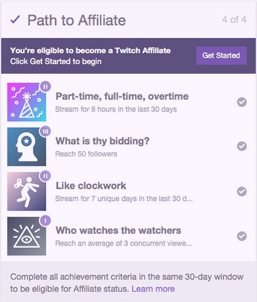
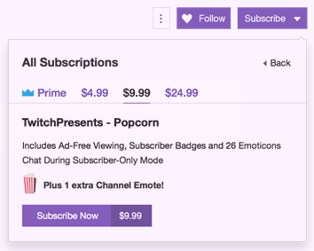

Me llamo Catalina Figueiras, tengo 16 años, soy de Buenos Aires Capital y este es mi primer sitio Web. Estoy en 4º año de secundaria y sigo la modalidad “Informatica”.
Me gusto mucho este curso ya que aprendí a usar lo básico de HTML, CSS y JA.
¿Qué es Twitch?
Twitch es una plataforma gratuita en la cual se realizan transmisiones en vivo, llamadas "live streaming", esta se enfoca en la retransmisión de videojuegos aunque también transmite música, charlas etc. Además, cuenta con un chat en directo en el que puedes escribir y tambein aparece lo que escriben otras personas en directo, por ejemplo, podemos ver una partida de Valorant, videos de ASMR o ver una entrega de premios.
Twitch fue lanzado como subproducto de Justin.tv el 6 de junio de 2011 cuando se celebraba Electronic Entertainment Expo. Para mediados de 2013, la plataforma ya contaba con más de 43 millones de visitas mensuales con una media visual de una hora y media.
En 2014 cuando la plataforma comenzó a ser una gran competidora, Amazon la compró y amplió sus fronteras.
¿Que es un stremer?
Se le dice “Streamers” a las personas que hacen stream, emisiones en directo, estos pueden transmitir diferentes cosas como videojuegos, charlas, reacciones y más cosas; algunos de los mas conocidos son
Auronplay
,
Rubius
,
Ibai
,
LitKillah
etc. Estos pueden ganar dinero de diferentes formas:
Donaciones
Las personas que ven estos directos, llamados viewers, pueden darle dinero a los streamers usando Bits con o sin mensaje, que son “monedas virtuales” las cuales podes comprar en esta plataforma y cuestan USD 0,01 cada uno, además estos suelen estar acompañados de emoticonos.
También, en vez de donar bits se puede donar dólares con o sin mensaje incluido. Aqui les dejo un tutorial que explica como comprarlos y enviarlos.

Programa de socios de Twitch
Esto es lo que les permite a los Streamers empezar a monetizar sus emisiones ya que, antes de obtener esto no pueden acceder a los bits, suscripciones etc. Los requisitos para poder acceder son al menos 500 minutos totales de emisión en los últimos 30 días, 7 días de emisión durante los últimos 30 días, una media de 3 espectadores simultáneos (como mínimo) en los últimos 30 días y tener al menos 50 seguidores.
Suscripciones
Cuando te suscribis a un canal accedes a más benéficos como, más emojis, hablar en el chat modo suscriptores, visualizaciones sin anuncios, etc.
Esto sale USD 1,99; 5,37 o 10,17, pero también podes tenerlo gratis si utilizas Prime gaming, que es un servicio que te ofrecen si tienes Amazon Prime o Prime Video.

Publicidad
También pueden ganar dinero si hacen promoción, publicidad o permiten que twitch ponga anuncios varios en el stream.